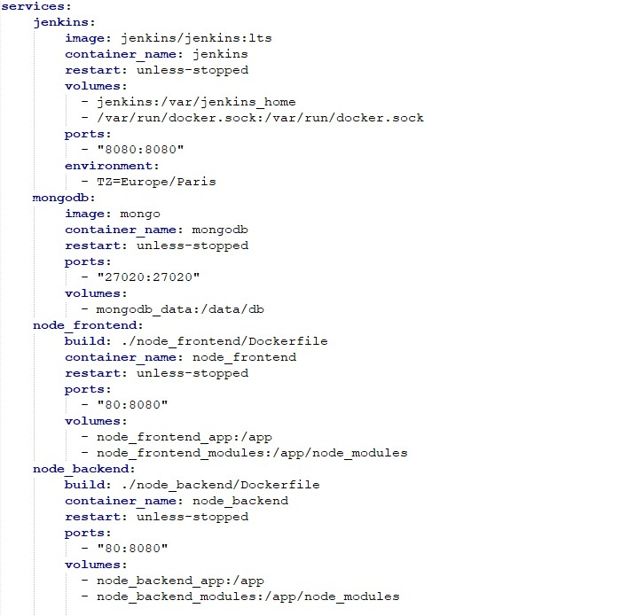
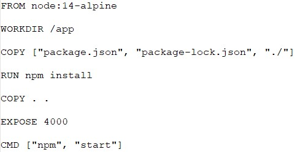
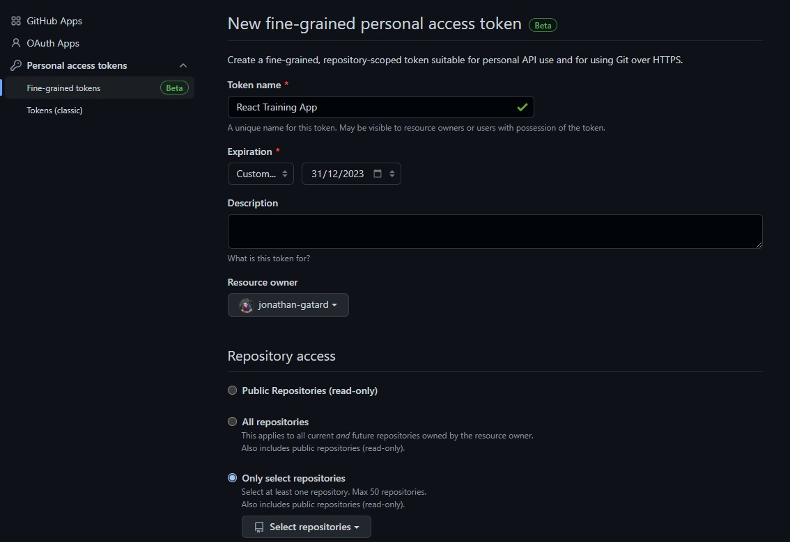
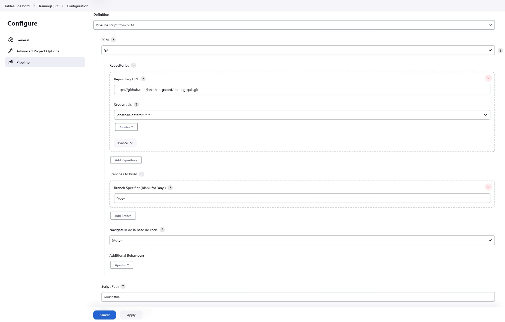
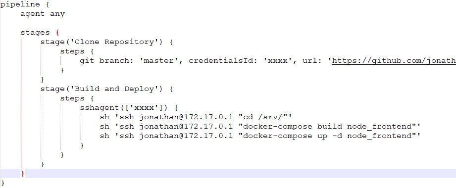
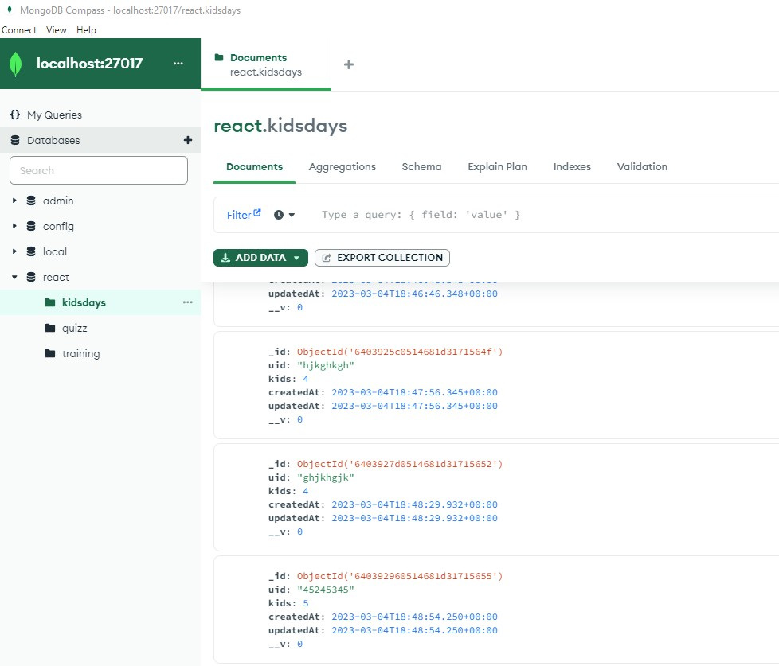
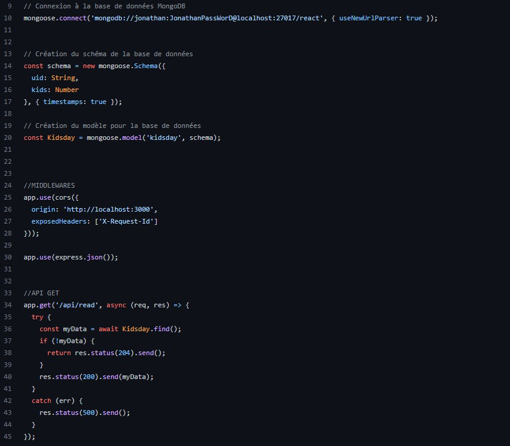
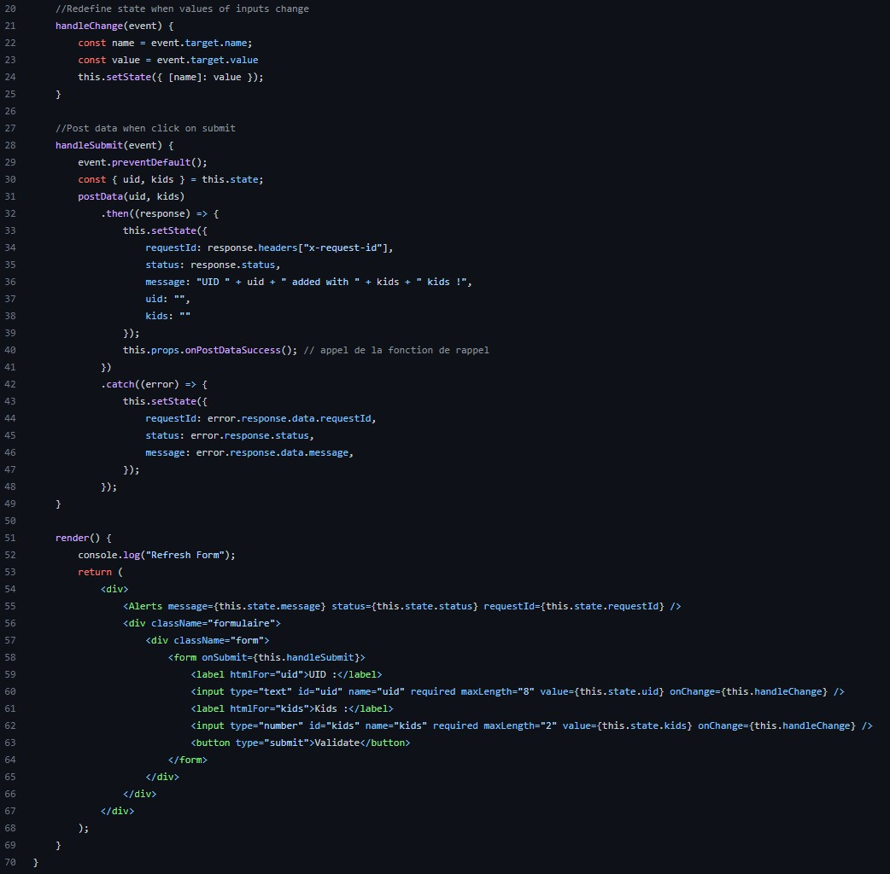

Installation d'un environnement de développement React• 2023
Pour faciliter le développement et le déploiement de mes applications React, j'ai créé un environnement Docker (avec Docker-Compose). L'environnement Docker permet d'intégrer facilement le backend et le frontend des applications, ainsi que le nécessaire pour gérer l'intégration et le déploiement continus (Jenkins).


J'ai généré un token d'accès à mon repository Github pour permettre le fonctionnement de Jenkins. Cela permet de restreindre l'accès au code source de l'application. J'ai ensuite configuré ce token dans Jenkins en tant que "secret", cela permet à Jenkins d'accéder au code source de l'application sur Github, de le build et de le déployer automatiquement.

Pour configurer Jenkins, j'ai créé des pipelines basés sur des fichiers de configuration appelés Jenkinsfiles. Ces pipelines définissent les étapes à exécuter pour l'intégration et le déploiement de l'application. Je compte mettre en place dans un futur proche des outils pour contrôler la qualité du code source de l'application (tels que SonarQube) La partie "environnement" est maintenant en place, le processus est automatisé et fiable pour le développement et le déploiement de mes applications React.


Pour préparer la base de données de l'application React, j'ai installé et configuré MongoDB, créé une base de données et des collections, et intégré MongoDB dans mon application. J'ai également mis en place des sauvegardes régulières pour garantir la sécurité des données.

Le développement de l'application a été effectué en utilisant le framework React pour le développement du frontend et Node.js pour le développement du backend. J'ai créé des composants React pour les différentes pages de l'application et les ai reliés à l'API du backend via des requêtes HTTP. Pour le développement du backend, j'ai créé des endpoints pour les différentes fonctionnalités de l'application et ai utilisé MongoDB pour le stockage des données. J'ai également mis en place des fonctions pour la validation des données, l'authentification et la gestion des erreurs.

